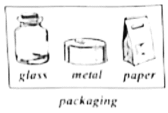

2022年北京市中考英语真题 原卷解析
2022北京中考真题
英 语
第一部分
本部分共33题，共40分。在每题列出的四个选项中，选出最符合题目要求的一项。
一、单项填空（每题0.5分，共6分）
从下面各题所给的A、B、C、D四个选项中，选择可以填入空白处的最佳选项。
1. My sister is only six, but ________ can already help with some housework.
A. heB. sheC. itD. they
【答案】B
【解析】
【详解】句意：我妹妹只有六岁，但她已经能帮忙做一些家务了。
考查代词辨析。he他；she她；it它；they他们。此处指“My sister”，用she，故选B。
2. We have history class ________ three o’clock every Friday afternoon.
A. atB. onC. inD. to
【答案】A
【解析】
【详解】句意：我们每周五下午三点钟上历史课。
考查介词辨析。at其后加时间点；on其后加星期或具体的时间；in其后加早中晚，月份，季节，年份等；to到。“three o’clock”是时间点，用时间介词at。故选A。
3. —_________ I take photos here?
—Sorry, you can’t. It’s not allowed in the museum.
A MustB. NeedC. CanD. Will
MustB. NeedC. CanD. Will
【答案】C
【解析】
【详解】句意：——我可以在这里拍照吗？——对不起，你不能。博物馆不允许拍照。
考查动词辨析。Must必须；Need需要；Can可以；Will将会。根据答语“Sorry, you can’t”可知，用can提问，用can/can’t回答。故选C。
4. After taking tennis classes, Tim is much ________ than last year.
A. strongB. strongerC. strongestD. the strongest
【答案】B
【解析】
【详解】句意：上了网球课之后，蒂姆比去年强壮多了。
考查形容词比较级。根据“than”可知，此处用形容词比较级，故选B。
5. —_________ will Liu Yang stay in the space station this time?
—For six months.
A. How longB. How oftenC. How muchD. How soon
【答案】A
【解析】
【详解】句意：——这次刘洋会在空间站待多久？——六个月。
考查特殊疑问句。How long多久；How often多久一次；How much多少钱；How soon多久之后。根据答语“For six months.”可知，此处对时长进行提问，故选A。
6. Mr. Smith has helped me a lot, _________ I’m thankful to him.
A. orB. butC. forD. so
【答案】D
【解析】
【详解】句意：史密斯先生帮了我很多，所以我很感谢他。
考查连词辨析。or或者；but但是；for为了；so因此。前后两句是因果关系，前因后果，用so连接，故选D。
7. The workers _________ the community center now.
A. cleanedB. were cleaningC. will cleanD. are cleaning
【答案】D
【解析】
【详解】句意：工人们现在正在打扫社区中心。
考查现在进行时。根据“now”可知句子要用现在进行时，其结构是“be（am/is/are） doing”。故选D。
8. Don’t lose heart. If you keep working hard, you _________ some day.
A. will succeedB. succeedC. succeededD. have succeeded
【答案】A
【解析】
【详解】句意：不要灰心。如果你继续努力，将来某一天你会成功的。
考查if引导的条件状语从句。if表示“如果”时遵循“主将从现”原则，即主句用一般将来时，从句用一般现在时；空格处于主句位置，故用一般将来时。故选A。
9. I ________ about my sister when my phone rang. It was her!
A. thinkB. will thinkC. was thinkingD. am thinking
【答案】C
【解析】
【详解】句意：我正在想我妹妹的时候，电话响了。正是她！
考查过去进行时。根据“I...about my sister when my phone rang.”可知，电话响的时候，正在想她，强调在过去的某个时间点正在发生的动作，用过去进行时，故选C。
10. Jim _________ a lot about Chinese culture since he began to study in our school.
A. learnsB. learnedC. will learnD. has learned
【答案】D
【解析】
【详解】句意：Jim自从开始在我们学校学习之后学到了很多关于中国文化的东西。
考查现在完成时。根据“since自从”可知主句要用现在完成时，其结构是“have/has done”，故选D。
11. On our farm, the tea leaves ________ by hand when they are ready.
A. pickB. pickedC. are pickedD. were picked
【答案】C
【解析】
【详解】句意：在我们的农场，茶叶成熟时都是手工采摘的。
考查一般现在时的被动语态。主语“the tea leaves”是动作“pick”的承受者，时态是一般现在时，所以用一般现在时的被动语态。故选C。
12. —Do you know _________ the new national park?
—Yes, I do. To protect wildlife and benefit the local people.
A. why did China set upB. why China set up
C. when did China set upD. when China set up
【答案】B
【解析】
【详解】句意：——你知道中国为什么要建立新的国家公园吗？——是的，我知道。为了保护野生动物，造福当地人民。
考查宾语从句。此处是宾语从句，需用陈述语序，排除AC；根据答语“To protect wildlife and benefit the local people.”可知，此处表示目的，故选B。
二、完形填空（每题1分，共8分）
阅读下面的短文，掌握其大意，然后从短文后各题所给的A、B、C、D四个选项中，选择最佳选项。
Our Christmas Goose

On a cold morning that December, my brother Rick and I were sent to Uncle Tommie’s on the other side of Little Mountain to get a goose for Christmas dinner. This long journey over the mountain was hard but worth it.
That morning, dark clouds were coming together overhead. I knew it was going to snow on the ____13____.
When we arrived, Uncle Tommie was already waiting for us. “Boys, I’m not ____14____ you off,” he said, “but the wind is picking up. You’d better get the goose and head for home soon.”
After a quick thank-you and goodbye I took the goose and we left. Halfway up the mountain, it began to snow heavily. I held the goose ____15____ to me.
By the time we reached the top of the mountain. it showed more heavily. And the wind seemed to blow straight through my coat. I stepped in front of Rick. “You must be cold. Open your coat!”
“Are you crazy?” Rick asked. “I’ll lose what little warmth I have!” When he saw I was ____16____, he slowly opened his coat.
I placed the warm goose inside his coat. Rick sighed happily (舒了口气). My plan was ____17____ .
On the way down, I started to shiver (发抖). Rick said. “Dave. it's your turn now.”
He passed me the goose. For a long moment, I just stood and ____18____ my freezing(冰冷的) hands on his body. We passed the goose back and forth (来回地) between us all the way. Finally, We got home.
Sitting at the table, we explained how the goose kept us from freezing. “We can’t have him for dinner! This goose helped ____19____ our lives,” I said.
Later, we named the goose Charley and he lived out his life in the yard, bossing around the chickens and another goose we bought to keep him company. A life as the most important bird was fitting for our ____20____.
13. A. mountainB. islandC. lakeD. beach
14. A. payingB. rushingC. showingD. calling
15. A. lightlyB. secretlyC. highD. close
16. A. frightenedB. regretfulC. seriousD. surprised
17. A. workingB. continuingC. improvingD. changing
18. A. raisedB. driedC. warmedD. examined
19. A. spareB. saveC. treasureD. give
20. A. leaderB. bossC. guideD. hero
【答案】13. A 14. B 15. D 16. C 17. A 18. C 19. B 20. D
【解析】
【导语】本文是一篇记叙文，讲述一只鹅救了作者和弟弟，他们将这只鹅作为宠物一直养着。
【13题详解】
句意：我知道山上要下雪了。
mountain山；island岛；lake湖；beach沙滩。根据前文“on the other side of Little Mountain”可知，是山上，故选A。
【14题详解】
句意：孩子们，我不是要赶你们走。
paying付钱；rushing冲；showing展示；calling打电话。根据“but the wind is picking up. You’d better get the goose and head for home soon.”可知，风越来越大了，叔叔建议我们最好赶快带上鹅回家，但本意不是赶我们走，故选B。
【15题详解】
句意：我把鹅抱紧。
lightly轻地；secretly秘密地；high高；close近。根据“Halfway up the mountain, it began to snow heavily. I held the goose...to me.”可知，雪越下越大，把鹅抱紧取暖，故选D。
【16题详解】
句意：当他看到我是认真的，他慢慢地打开他的外套。
frightened害怕的；regretful后悔的；serious严肃的，认真的；surprised惊讶的。联系上下文，下雪很冷，我让弟弟把衣服敞开，当他看到我是认真的，他才这样做，故选C。
【17题详解】
句意：我的计划奏效了。
working工作，有效；continuing继续；improving提升；changing改变。根据“I placed the warm goose inside his coat. Rick sighed happily (舒了口气).”可知，鹅给了弟弟温暖，所以我的计划奏效了，故选A。
【18题详解】
句意：有很长一段时间，我只是站在他身上，用冻僵的手取暖。
raised筹集；dried弄干；warmed使温暖；examined检查。根据“I just stood and...my freezing(冰冷的) hands on his body”可知，用鹅给自己温暖，故选C。
【19题详解】
句意：这只鹅救了我们的命。
spare匀出；save节省，救；treasure珍惜；give给。根据“We can’t have him for dinner! This goose helped... our lives,”和上文内容可知，鹅使我们免于冻僵，所以是救了我们，故选B。
【20题详解】
句意：作为最重要的鸟是我们一生的英雄。
leader领导；boss老板；guide导游；hero英雄。鹅救了我们，所以是我们的英雄，故选D。
三、阅读理解（每题2分，共26分）
阅读下列短文，根据短文内容，从短文后各题所给的A、B、C、D四个选项中，选择最佳选项。
A
WHO IS YOUR ROLE MODEL? WHY?
My role model is my neighbor Ms. Li. She is in her eighties now but she is still young at heart. I often see her riding her bike in the park and she also spends time doing volunteer work. She helps me understand that people won’t be old if they still have a great love for life. Adam | I miss Mrs. White most after primary school. She was our math teacher and always patient with us. She helped us to work out the answers ourselves, no matter how difficult the questions were. So Mrs. White is my role model, and I want to be a teacher like her in the future. Betty |
Norman Bethune was a Canadian doctor. In 1938, Dr. Bethune came to China and helped treat the wounded. He often worked very hard without resting. Once, he managed to save over one hundred lives in sixty-nine hours. He is still remembered in both China and Canada today. So he is my role model. Peter | Yuan Longping is my role model. He is one of the greatest agricultural (农业的) scientists of our time. He worked hard to grow better rice to solve the problems of food shortage. It is sad that Mr. Yuan has left us, but his dreams are carried by many plant and agricultural researches. Emma |
21. Who is Emma’s role model?
A. Ms. Li.B. Mrs. White.
C. Norman Bethune.D. Yuan Longping.
22. What does Betty want to be in the future?
A. A teacher.B. A scientist.C. A doctor.D. A volunteer.
23. What do we know about Ms. Li?
A. She worked in a hospital.
B. She solved the food problems.
C. She is old in age but young at heart.
D. She is very patient with her students.
【答案】21. D 22. A 23. C
【解析】
【导语】本文是一篇记叙文，分别是四位介绍自己的榜样是谁，以及原因。
【21题详解】
细节理解题。根据第四栏中“Yuan Longping is my role model.”可知，袁隆平是艾玛的榜样，故选D。
【22题详解】
细节理解题。根据第二栏中“and I want to be a teacher like her in the future”可知，贝蒂以后想成为一名老师，故选A。
【23题详解】
细节理解题。根据第一栏中“My role model is my neighbor Ms. Li. She is in her eighties now but she is still young at heart.”可知，李奶奶已经八十多岁了，但内心仍很年轻。故选C。
B

I joined a band （乐队）as a drummer in my middle school. I thought it would be fun playing the drum and meeting new friends. At first it was easy, but a month later, it got difficult. I was the only one who couldn’t keep pace （节奏）with the other players.
Our teacher, Angie, singled me out to keep practicing while everyone else got to relax. I felt ashamed （羞愧的）as my teammates watched me fail so many times. Finally I got so tired of practicing that I didn’t care about doing it right.
“Are you giving up on me. Steve?” Angie asked.
“Yes, I am,” I shouted. Angie sent me inside the music room where I cried out. Then she came in and said. “Don’t be sad. I believe you can make it!” She told me never to give up. She left me alone and I realized Angie was right—by giving up, I was also giving up on the team and myself.
With her comfort, I decided to go on practicing. However, I still couldn’t play well. Knowing my difficulties, my teammates gave me a hand. They spent about three more hours practicing with me every week. Thanks to their support and help, I began to keep pace with them. Later, we performed wonderfully in an important show.
In the whole process, I was taught that although we each had our own job to do in a show, it would take all of us working together to make the show great. I felt accepted and made great progress. I love everyone in the band. I can’t imagine what my school life would be like without them.
24. One month after he joined the band, Steve felt playing the drum was _________.
A. funnyB. helpfulC. noisyD. difficult
25. With Angie’s comfort, Steve decided to _________.
A. have a good restB. go on practicing
C. give others a handD. start another band
26. From his experience, Steve learned about ________.
A. the value of teamworkB. the effect of shows
C. the importance of hobbiesD. the power of music
【答案】24. D 25. B 26. A
【解析】
【导语】本文是一篇记叙文，主要讲作者在学习敲鼓的过程中遇到困难，差点放弃，在老师和团队成员的鼓励下他坚持下来了。
【24题详解】
细节理解题。根据“but a month later, it got difficult.”可知一个月后Steve觉得敲鼓是困难的。故选D。
【25题详解】
细节理解题。根据“With her comfort, I decided to go on practicing.”可知在老师的鼓励下，他决定继续练习。故选B。
【26题详解】
细节理解题。根据“I was taught that although we each had our own job to do in a show, it would take all of us working together to make the show great.”可知Steve学会了团队合作的价值。故选A。
C
What does it mean to be green? Green is more than just a color. It also means taking special steps to protect the environment. Buying a green product is a small step everyone can take. Deciding whether a product is green, however, isn’t always easy. We need to consider the whole life cycle of the product even after it’s of no use. Here is what we may keep in mind.

The materials of a product are usually our first focus (关注). What is it made of? Are there any harmful chemicals in it? Green products are made of more natural materials which are free from harmful chemicals, so they can be good for our physical health.
Packaging is important. How is a product packaged? Is it over packaged? We’d better choose glass, metal and paper packaging, as these can be reused or more easily recycled (回收利用). We can also look for less packaging or even choose unbagged products whenever possible.
Location (地点) matters. Where was a product produced? Where are we buying it? Think about how much energy was used to get it to us try to choose local products. When it comes to food, it is a good idea to order directly from local farmer, shop at markets and buy fruits in season. Buying from stores near our houses is also a good choice, because we can go there without driving a car.
Look into what the company tells us about their product. It’s easy to say that a product is “green” or “all natural” but the words may be too good to be true. So, much of the information about a product should be taken with a grain of salt. After all, companies try to make us believe that their products are environmentally responsible.
The greenest thing is certainly the one we don’t buy. Things like food and clothing are necessary for life. But many others are not. Better than buying is choosing to leave an unnecessary product in the store and doing without. It sends a message to the producer, keeps money in our pockets, reduces (减少) waste and keeps the planet healthy.
27. The writer would suggest choosing a product that is ________.
A. over packagedB. delivered from abroad
C locally producedD. made of unnatural materials
28. The words “be taken with a grain of in salt” Paragraph 5 probably mean “________”.
A. be easily understoodB. not be completely believed
C. be widely spreadD. not be quickly forgotten
29. Which of the following would be the best title for the passage?
A. Buying GreenB. Recycling Waste
C. Keeping HealthyD. Reducing Energy Use
【答案】27. C 28. B 29. A
【解析】
【导语】本文是一篇说明文。文章通过解释“Green”这个词，呼吁大家保护环境。
【27题详解】
推理判断题。根据“Think about how much energy was used to get it to us try to choose local products. When it comes to food, it is a good idea to order directly from local farmer, ...”可知，作者建议选择当地生产的产品，故选C。
【28题详解】
词句猜测题。分析“So, much of the information about a product should be taken with a grain of salt. After all, companies try to make us believe that their products are environmentally responsible.”可知，公司试图让我们相信他们的产品对环境负责，但是我们应该秉持一个怀疑的态度，此处“be taken with a grain of salt”的意思是“不被完全相信”，故选B。
【29题详解】
最佳标题题，本文作者通过解释“Green”这个词，呼吁大家保护环境。选项A“Buying Green”符合主题，故选A。
D
A Pathway (路径) to Meaning in Life
When it comes to a meaningful life, we might think of love, happiness and health. A life filled with meaning is what most of us want for ourselves. Then, what makes a meaningful life?
Many researchers agree that a meaningful life comes down to three factors (因素): having long-term goals, believing that one’s life matters, and feeling that one’s life fits together and “makes sense”.
But we believe there is more to consider. Sometimes life enables us to experience small moments of beauty. When people are open to appreciating (欣赏) such experiences, these moments may improve how they see their own life. We call this experiential appreciation (EA). EA is about the person feeling connected to events and being able to appreciate the value within the connection. It shows the discovery of and admiration for life’s beauty.
We recently set out to better understand EA in studies. We were interested in whether EA was also tied to general judgment of meaning in life. If so, it could be a factor for meaningfulness.
In the first study, we had people rate (评估) their support for different methods of reducing stress. We found that people who managed stress by focusing on their appreciation for life’s beauty also reported experiencing life as highly meaningful.
In the next study, we asked people to rate the degree to which they agreed with various statements, such as “I appreciate the beauty of life” and “I appreciate little things in life,” as well as other statements that related to the three factors and a general sense of meaning in life. Our results showed that the more people reported that they were “appreciating life” and its many experiences, the more they felt their life was valuable.
In the following studies, we further looked at the connection between EA and meaningfulness. For example, we found that people who were asked to look back on the most meaningful event of the past week generally reported high EA in those moments.
All the results proved our theory (假设) true. But putting it into practice can be difficult. Our fast-paced lifestyles fill the day with goals. We try to get the highest output both at work and in spare time. This focus on future outcomes makes it all too easy to miss what is happening right now. We should slow down and let life surprise us.
30. You were most probably in the EA condition when _________.
A. you made a travel plan for the coming holiday
B. you hurried to serve the customers in the store
C. you practiced hard to become the best violinist
D. you stopped to admire the roses by the roadside
31. What can we learn from the studies mentioned in the passage?
A. Thinking back to the past weakens our sense of meaning.
B. Enjoying small things can influence our attitude toward life.
C. Proper stress management is the key to living a satisfying life.
D. Good judgment on beauty improves connections among people.
32. What does the last paragraph mainly tell us?
A. It is easier for results-driven people to achieve success.
B. We often turn a blind eye to the present moment.
C. A fast-paced lifestyle helps us reach our goals.
D. Future life will bring us many more surprises.
33. What is the writer’s main purpose in writing this passage?
A. To explain how to discover beauty in life.
B. To discuss what the true meaning of life is.
C. To introduce a new factor for a meaningful life.
D. To compare different factors for meaningfulness.
【答案】30. D 31. B 32. D 33. B
【解析】
【导语】本文是一篇议论文，讨论是什么让生活变得有意义。
 30题详解】
30题详解】
推理判断题。根据“When people are open to appreciating (欣赏) such experiences, these moments may improve how they see their own life. We call this experiential appreciation (EA).”可知，当人们乐于欣赏这样的经历时，这些时刻可能会改善他们对自己生活的看法，我们称之为体验欣赏。选项D“你停下来欣赏路边的玫瑰”符合，故选D。
31题详解】
推理判断题。根据“Sometimes life enables us to experience small moments of beauty. When people are open to appreciating (欣赏) such experiences, these moments may improve how they see their own life.”可知，生活让我们体验到美丽的小瞬间，当人们乐于欣赏这样的经历时，这些时刻可能会改善他们对自己生活的看法。故选B。
【32题详解】
段落大意题。根据“We should slow down and let life surprise us.”可知，我们应该慢下来，让生活给我们惊喜。所以最后一段告诉我们未来的生活将给我们带来更多的惊喜，故选D。
【33题详解】
主旨大意题。本文主要讨论是什么让生活变得有意义，故选B。
第二部分
本部分共6题，共20分。根据题目要求，完成相应任务。
四、阅读表达（每题2分，共10分）
阅读短文，根据短文内容回答问题。
Working Out through Online Videos

Physical exercise is good for our mind, body and spirit. Today, working out through online videos is becoming very popular. Since the Internet is widely used, it’s very easy for us to do so. That means we can work out anytime anywhere.
One of my friends, Lin Fei. followed short workout videos to do daily exercise. “With live programs, I feel like working out with my friends, which encourages me to hold on to the last minute.” she said. Another friend of mine, Michael, told me that workout videos let him feel so comfortable. “I have a fear of working out at the gym（健身房）because I don’t like being watched by others. Working out at home makes working out much more enjoyable.” he said.
With their examples, I decided to give it a try. When I told my plan to my elder sister, a P.E. teacher, she reminded me that workout videos could be helpful but might still carry some problems.
“Without being with someone in person, you will be less willing （愿意的）to work out to your best. Working out at the gym allows you to have advice in real time and get pushed harder.” my sister said to me. “Well, if you really want to have a try. first, choose proper programs or videos. That’s very important. And then ask your friends for advice. Their experiences can give you a good sight into what you can expect. Anyway, don’t be addicted（沉迷的）to it. You should try different ways to work out to be healthy.”
At her suggestions, I finally followed an online workout program with personalized help that is held for three months. After the first period of training, I felt it very practical and helpful when I put in the right amount （量） of work along with a strong will. Compared with going to the gym, using online videos to work out is a much cheaper and time-saving choice. But it can be difficult sometimes when I’m too lazy or too busy to stick to it.
34. Which way to work out is becoming very popular today?
__________________________________________________________________
35. Why does Michael dislike working out at the gym?
__________________________________________________________________
36. What is the problem of working out without someone else in person?
__________________________________________________________________
37. How did the writer feel about his first period of training?
__________________________________________________________________
38. Would you like to follow online videos to work out? Why or why not?
__________________________________________________________________
【答案】34. Working out through online videos.
35. Because he doesn’t like being watched by others.
36. Without being with someone in person, you will be less willing to work out to your best.
37. It is very practical and helpful.
38. Yes. Because I feel free and relaxed when I follow online videos to work out. It doesn’t cost money and saves my time.
【解析】
【导语】本文是一篇记叙文，作者在朋友的鼓励下跟着视频进行锻炼，这是方便又节省时间的选择。
【34题详解】
根据“Today, working out through online videos is becoming very popular.”可知，如今，通过在线视频健身变得非常流行。故填Working out through online videos.
【35题详解】
根据“I have a fear of working out at the gym because I don’t like being watched by others.”可知，Michael害怕在健身房锻炼，因为不喜欢被别人注视。故填Because he doesn’t like being watched by others.
【36题详解】
根据“Without being with someone in person, you will be less willing to work out to your best.”可知，如果没有和某人在一起，你就不太愿意努力做到最好。故填Without being with someone in person, you will be less willing to work out to your best.
【37题详解】
根据“After the first period of training, I felt it very practical and helpful when I put in the right amount of work along with a strong will.”可知，在第一阶段的训练后，我觉得我投入了适量的工作和坚强的意志，这是非常实际和有用的。故填It is very practical and helpful.
【38题详解】
本题属于开放性试题，言之有理即可。参考答案：Yes. Because I feel free and relaxed when I follow online videos to work out. It doesn’t cost money and saves my time.
五.文段表达（10分）
39. 从下面两个题目中任选一题，根据所给提示，完成一篇不少于50词的英语文段写作。文中已给出内容不计入总词数。所给提示词语仅供选用。请不要写出你的校名和姓名。
假定你是李华，你的英国笔友Chris对中国文化很感兴趣，他给你发来邮件，询问中国人日常生活中的基本社交礼仪，如待人接物、餐桌礼仪等。请你用英语回复一封邮件，介绍你所知道的相关礼仪。
提示词语：manners, shake hands, polite, gift, chopsticks
提示问题：· What do we do when we meet people for the first time?
· How do we behave properly at table?
Dear Chris, I’m glad to know that you’re interested in Chinese social manners. ________________________________________________________________________________________________________________________________________________________________________________________________________________________________________________________________________________________________________________________________________________________________________________________________________________________________________________________________________________________________________________________________________________________________________________________________________________________________________________________ I hope the above is helpful. Please feel free to ask for more information. Yours, Li Hua |
某英文网站正在开展以“提升效率”为主题的征文活动。假定你是李华，请用英语写一篇短文投稿，谈谈你在学习或生活中是如何提升效率的，取得了什么效果。
提示词语：plan, task, attention, make use of, progress
提示问题：· How do you increase your efficiency(效率)?
· What have you achieved?
High efficiency is important for a busy student. ________________________________________________________________________________________________________________________________________________________________________________________________________________________________________________________________________________________________________________________________________________________________________________________________________________________________________________________________________________________________________________________________________________________________________________________________________________________________________________________ |
【答案】例文1
Dear Chris,
I’m glad to know that you’re interested in Chinese social manners. China is a country with a long history, so there are many customs here. Let me tell you some of them.
Firstly, you are supposed to shake hands when you meet someone for the first time. Secondly, you should bring a gift when you are invited to a party and be sure to arrive on time or a few minutes earlier. Thirdly, when you eat meals with others, it’s rude to point at others with your chopsticks. And don’t make noise when you have your soup.
I hope the above is helpful. Please feel free to ask for more information.
Yours,
Li Hua
例文2
High efficiency is important for a busy student It is necessary for everyone to learn how to increase efficiency.
I have tried many ways to increase my efficiency since I was a middle school student. Before the beginning of a day, I always think about my goals and make a list of things I need to do. Then, I organize my to-do list to make an effective plan for the day. I always spend time doing important tasks first and make good use of the rest of the time.
By managing my time well, I have made progress. I usually finish my homework on time and still have time to relax myself. High efficiency and time management have helped me be successful in various areas of my life.
【解析】
【详解】例文1
1.题干解读：本文是一篇邮件作文。要求根据提示问题，给Chris介绍中国人日常生活中的基本社交礼仪，注意要点齐全，可适当发挥。
2.写作指导：写作时要以第二人称来介绍，时态用一般现在时。作文可分为三段，第一段引出话题；第二段从待人接物、餐桌礼仪方面给出建议；第三段收尾。要保证语言连贯，无语法和拼写错误。
例文2
1.题干解读：本文是一篇材料作文。要求以“提升效率”为主题，结合提示问题进行写作，注意要点齐全，可适当发挥。
2.写作指导：写作时要以第一人称来介绍，时态以一般现在时为主。作文可分为三段，第一段引出话题；第二段介绍自己是如何提高效率的以及取得了什么成就；第三段收尾。要保证语言连贯，无语法和拼写错误。